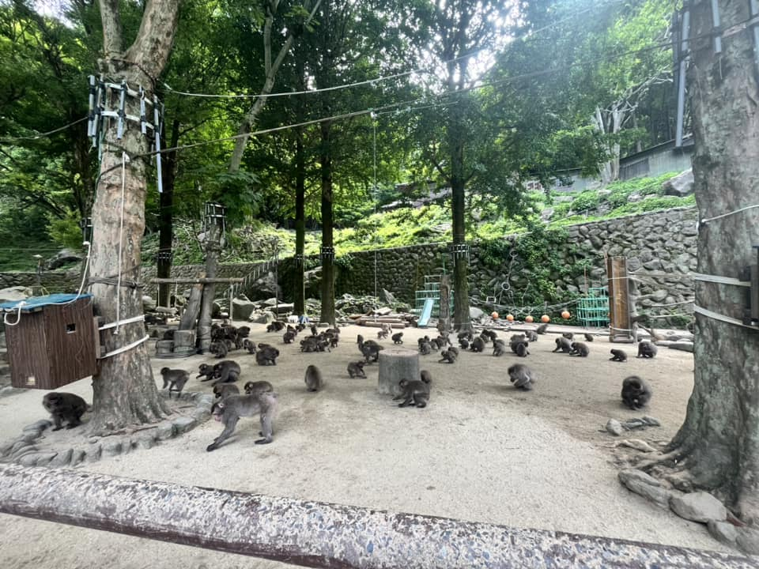
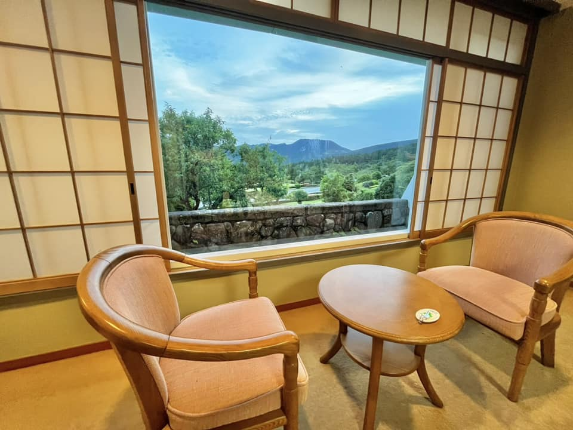
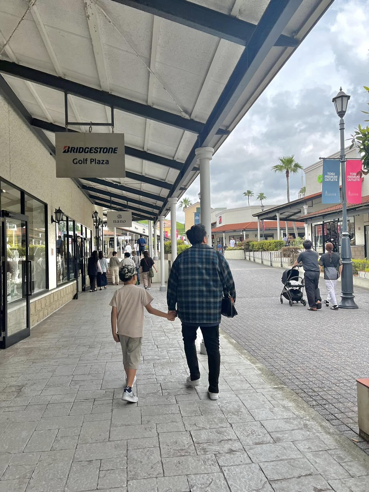
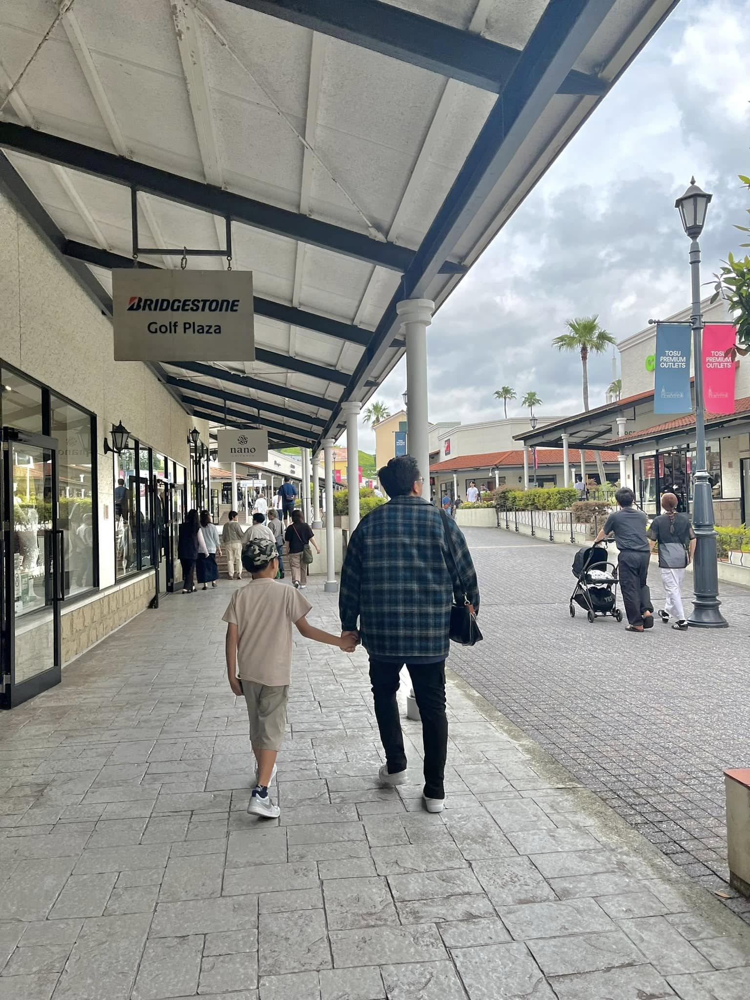

Our Japan Trip: Family, Fun, and Little Adventures
Posted on Sept 23, 2025
The trip started way before we landed in Japan. At Manila airport, the kids were buzzing with excitement — it was their first time flying this far, and they couldn’t stop asking questions: “How long until we see grandma?” “What food do they serve on the plane?” Even though flights can be tiring, the energy of the kids made the journey fun.
When we finally landed in Fukuoka, there was my mom waiting. I’ll never forget her smile — wide, excited, almost teary-eyed. She’s been living in Japan for a while now, and finally having us there made her so happy. The kids ran to her right away, and just like that, all the tiredness from the flight disappeared.
Yoshinogari Historical Park

 It felt like stepping into another world — wooden houses, tall watchtowers, and wide green spaces.
The kids enjoyed running around while I tried to imagine what life was like back in ancient times.
Mom shared little things she learned about the place, and it was nice seeing her so involved in showing us her “Japan.”
It felt like stepping into another world — wooden houses, tall watchtowers, and wide green spaces.
The kids enjoyed running around while I tried to imagine what life was like back in ancient times.
Mom shared little things she learned about the place, and it was nice seeing her so involved in showing us her “Japan.”
Hotel Fugetsu Hammond
The hotel was cozy, and after our long days out, it felt so good to just come back, rest, and talk about the day. I still remember mom and the kids laughing in the room, sharing snacks we bought from a nearby store. Simple moments, but those are the ones that stick the most.
Takasakiyama Natural Zoological Garden
 The monkey park was a hit. Hundreds of monkeys everywhere! Some were playful, some were just sitting like little old men thinking about life. The kids couldn’t stop laughing, especially when one monkey snatched food. Watching them so amused made me feel like a kid again too.
Kijima Kogen Park and Hotel
 This was pure fun. Rides, games, and so much laughter. It felt like we all got a break from being “grown-ups.” Even mom was smiling and enjoying just watching the kids scream and laugh. Staying at the hotel nearby made it easy to just relax afterward — tired legs but happy hearts.
Tosu Outlet
 
Shopping at Tosu Outlet had so many shops that it felt like a maze of good deals.
The kids weren’t as excited about the shopping part, but they did enjoy ice cream while waiting.
For us adults though, it was like a mini treasure hunt.

Shopping at Tosu Outlet had so many shops that it felt like a maze of good deals.
The kids weren’t as excited about the shopping part, but they did enjoy ice cream while waiting.
For us adults though, it was like a mini treasure hunt.
Japanese Food
Ramen that warmed us up, sushi that tasted so fresh, crispy tempura, and desserts that looked too cute to eat. Even convenience store snacks felt special. Mom kept laughing at how amazed we were with even the simplest things like onigiri.